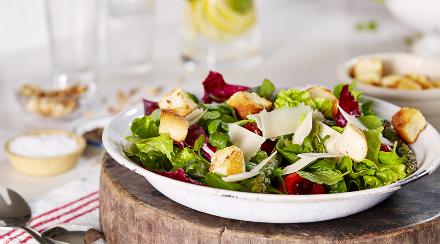

Salad Recipes

This is of course not a hard and fast instructional.
Everyone has different tastes in salad and I bow to that.
Maybe you like yours with a creamy dressing; maybe you
like yours super assertive like Amanda Hessers anchovy-
spiked vinaigrette. Maybe you like to always have extra
vegetables in your salad or, like me, you just want to
keep it ultra-simple
ingredients:
- About 4 ounces lettuce or mixed greens, washed,
dried, and torn
- Finely shredded carrots or julienned cucumbers
(optional)
- Small handful finely shredded fresh basil, mint or
other aromatic herb (optional)
- 2 tablespoons olive oil
- 2 teaspoons vinegar or lemon juice
- 1/2 teaspoon honey or maple syrup
- Flaky salt and freshly ground black pepper
- Grated Parmesan or Asiago cheese, for garnish
(optional)
equipent:
Steps you can follow to make a salad:
- Wash the greens and spin dry if you like, then lay
them out on a towel to air-dry for a little while
- Tear up your greens if you think they will be too
big to spear and eat gracefully
- No matter how you serve your salad, it's best to toss
it in a really big bowl much bigger than the volume
of the green themselves
- Here I added about 1/3 cup grated carrot (I didn't
peel the carrot, and I grated it straight into the
salad) and a small handful chiffonaded basil
- For this salad dressing, whisk 2 tablespoons good
olive oil with 2 teaspoons balsamic vinegar until
thick and emulsified
- Whisk in 1/2 teaspoon honey and blend
- Taste the dressing and adjust as needed
- Drizzle the salad very lightly with dressing, just
enough to moisten the lettuce, and work it in with
your hands or two forks, stopping to toss it before
you add all the dressing you've made. You want to
coat the greens very, very lightly
- As you toss the salad with your hands or forks,
sprinkle on salt and pepper. Taste and adjust as
needed
- Serve the salad in individual bowls, or on plates.
Garnish with some pepper, a shaving of cheese, or
some fruit or nuts